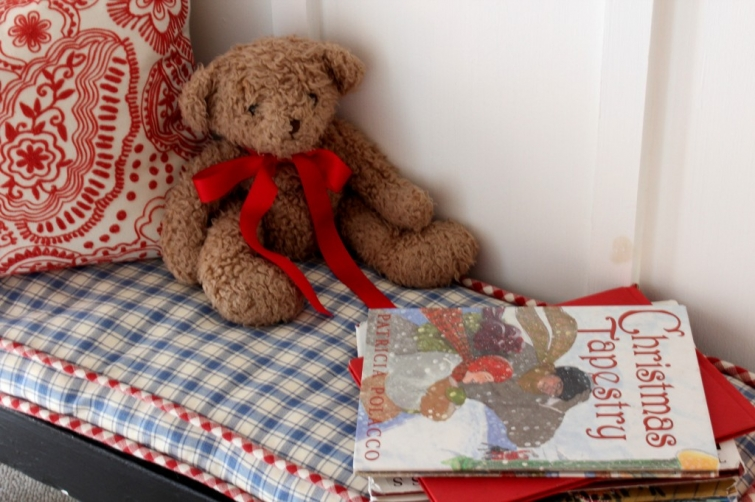
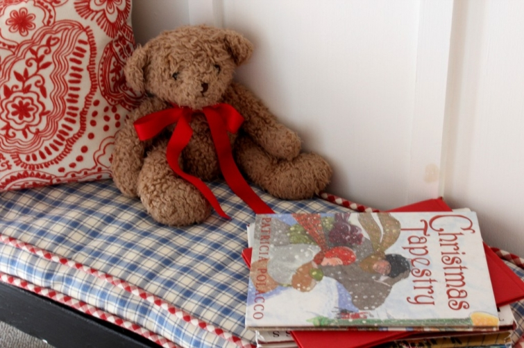

.png)
.PNG)
.PNG)
.PNG)
.PNG)
.PNG)
.JPG)
.JPG)
.PNG)
.PNG)


 One of the many things that I love about this holiday season is books…especially children’s books. It all started with How the Grinch Stole Christmas, and progressed through Merry Christmas Strega Nona, Apple Tree Christmas, The Polar Express, and many many more. For most of the year, my collection of children’s Christmas books stays on the bookshelves in the great room, but at Christmas those books can be most anywhere.
One of the many things that I love about this holiday season is books…especially children’s books. It all started with How the Grinch Stole Christmas, and progressed through Merry Christmas Strega Nona, Apple Tree Christmas, The Polar Express, and many many more. For most of the year, my collection of children’s Christmas books stays on the bookshelves in the great room, but at Christmas those books can be most anywhere.
I take a large stack to my classroom, but the others get placed around the house. William Joyce’s beautifully nostalgic Santa Calls has been known to be on the piano bench, and a pile of the others gets placed with one of our son’s old childhood teddy bears on the bench in the hall.
The Polar Express was instantly my favorite the year it came out, but later I came to love Patricia Polacco’s books – and especially her Christmas books – even more.
One year long ago when I was teaching first grade in a primary school, I had a very challenging student who struggled with reading. His behavior was a challenge, and academically he was also a challenge. His mother worked as a night shift waitress, but she and I did all we could to help him that year. He made a lot of progress and went on to second grade at a different school.
A year later, I moved to a different school to teach third grade, and ….you guessed it, he was in my class again! I read aloud a lot of Patricia Polacco books to my students in third grade. One morning in early December, this student came rushing into my classroom, dug through his bookbag, pulled out a book, and said, “You gotta read this one to the class today!” It was a brand new Patricia Polacco book that I had never seen before. I asked him where he had gotten it, and he told me that his mom had taken him to the library downtown, and he just knew I was going to love it. 
I normally try to “pre-read” a book before I read it aloud to my students just to make sure it is appropriate, but with his excitement there was no way I was going to squelch that love for this book. So we all gathered there on the carpet and read it right then, and I did love it. I loved it through that lump-in-your-throat and good-kind-of-tears-in-your-eyes ending that it has. (The kind that makes it hard to read aloud!) And I have loved Christmas Tapestry as my favorite children’s Christmas book ever since. Each December when I read it to my students, I can’t help but think of that former student and his excited, “You gotta read this to the class today!” love for the book, too.
And there are other Christmas books I love, too…the ones for adults. They also show up in various places in the house – the kitchen, the coffee table in the great room, and on the buffet in the foyer.

Obviously, the best book for Christmas stories is the Bible, but for other literature, I absolutely love Jan Karon’s books.
Her Shepherds Abiding is my favorite, and I have read it every Christmas since it was published.
And if you are going to sit down and enjoy reading a wonderful Christmas book, you might as well enjoy it with a cup of hot spiced tea. I made the little bags of tea by following the recipe below and putting it in ziplock bags inside the small kraft paper sacks. Then ribbon was glued on, and I made a label out of white tag board backed with a square of my favorite Christmas paper from last year.
The mug above is another favorite of mine – a vintage DeForest of California Santa mug from my childhood. It has unfortunately been broken a time or two in its many years of use – so it can’t be used for the tea. 
The bags make great gifts to give when you have visitors during the holidays.

And now to the giveaway!
I would love to be able to invite all of you over for a Christmas party, but obviously that is not possible, so I decided that I would give one of you a Christmas gift. It is just a few of my favorite things…

a copy of Patricia Polacco’s Christmas Tapestry, a copy of Jan Karon’s Shepherds Abiding, a Frasier Fir scented candle from the Thymes company (to make your house smell like Christmas!) and one other little surprise (what is a Christmas gift without a little surprise?) To enter, just leave a comment on any of the Christmas Traditions posts between now and midnight on the 12th of December (and yes, if you left a comment on the “Snow” post earlier in the week you are already entered.) You may enter once on each post if you would like more chances to win. I will draw a name and announce the winner on Friday, December 14th. I think you will love these books!
So here is my question for you today:
What is your favorite Christmas book?
hoping to hear from you,

*****Giveaway has closed.***
If you are interested in ordering copies of these, they are available here. The link is my Amazon Affiliate link.


.PNG)
I have enjoyed so many blog sites this wonderful Christmas season. Yours has been my favorite. especially the one on Christmas books .Thank you and Merry Christmas
What a great giveaway. I’m a total bibliophile–as are my children. Fingers crossed!
I love the Polar Express. One of my all time favorites!
I love, love, love books! Much like your house you can’t walk five feet without finding a stack of books. Don’t you just love it when a student “gets it” and they discover the beauty and enjoyment of reading. I am blessed with a house full of readers.
Thank you for sharing your beautiful home with us.
I love your stockings. Weird, but the smell of Barbie Doll plastic is what brings back childhood Christmas memories for me! Merry Christmas!
Katrina
Have you ever read the Christmas story in the Little House on the Prairie books? Ahhh, its magical, too. That one was always may favorite growing up. What a wonderful story about your student – I’m sure it is those moments that make it all worth it. Merry Christmas, Kelly!
My favorite Christmas book is The Best Christmas Pageant Ever. I read it to my third graders every year when I was a teacher. I love reading your blog and then the comments your readers make. (I just remembered that I have Dorothea Benton Franks’ book, The Christmas Pearl, saved to read. Thanks for the reminder, Missy.)
I am so excited to have found your site! What a blessing and a joy to see such beauty and inspiration! Thank you for all that you have done to create a wonderful holiday spirit! Wishing you and yours a blessed Christmas!
One of my favorite Christms books is Why Christmas trees Aren’t Perfect. I have so enjoyed your posts and love the charm and warmth of your home. Wishing you a wonderful Christmas with your family and friends!
First, your blog is wonderful. Just found you a few weeks ago! Second, my favorite Christmas book would have to be “‘Twas the Night Before Christmas”!!
Love it
Always on the lookout for new Christmas books, and these look wonderful! What a great giveaway!
I love all the childrens Christmas books. I can’t think the name of the book but it has to do with the stable and the animals. Sorry, the name isn’t coming to me. I always love to read Christmas miracle stories. I am a softie.
I was a mom to one of those “difficult” kids. It’s so hard.
Love your blog! I taught 1st & 2nd grades for 31 years. I have quite a collection of books that I now share with my grand kids. Hard to choose a favorite, but I still pull out a book that I had as a child, (with crumbling pages, scribbles, & stains) that warms my heart. It’s Raggedy Anne’s Merriest Christmas! by Johnny Gruelle. It’s a magical story about a little girl’s wish for a present & the dolls in her nursery come alive & help Santa make her wish come true…Raggedy Ann is, of course, the leader of the nursery toys! Merry Christmas!
Hearing your story about your student brought tears to my eyes. I know that it must be difficult to teach a child that struggles academically and behaviorally,especially when you have other students to teach,however it’s just so important to try and find a way. You showing excitement about that little boy’s book probably left a lasting mark on his heart and in his head. I’ve never read the books you talked about, but I would love to. We have so many wonderful kids books that we read to our children, and now our grandchildren that I don’t think I could pick one favorite. I love books and have so many wonderful memories that involve books. I love the book vignettes you have created. I want to come to your house!
Oh my! I missed a couple of your Christmas Traditions postings, Kelly and I can’t believe that I missed this one. It’s like you wrote it for me!!! Books and Christmas… YES!! Two of my favourite things…I know now I should break into song here 🙂 But it’s true!
I have a couple of boxes filled with Christmas books that are carefully brought out each Christmas and placed in strategic spots around the house. Care for a Christmas tale anyone? Drop everything and let’s read!
Some of my favourite books are the gorgeous popup books by the talented Robert Sabuda. My two favourite of his are “The Night Before Christmas” and “The Twelve Days of Christmas”. They are a feast for the eyes! I do love Patricia Palacco and “The Christmas Tapestry” is a favourite. “Together at Christmas” is a recently published sweet little book by Eileen Spinelli that could become a favourite. I also love revisiting the “Wind in the Willows” winter bits too.
Oh dear Kelly – I could go on and on about the books I love to share… but I will stop now.
Thank you for this posting, my friend (I wish someday I could come and visit as I am sure we would have so much to chat about).
Take care
Cath
I,too,love Christmas books. One of my favorites is John Burningham’s book called Harvey Slumfenburger’s Christmas Present. I love Burningham’s illustrations and the message is endearing to children of all ages. It is a great read aloud.It was read to many first graders and fifth graders book buddies when I taught first grade. I just discovered your blog and enjoy reading it.
Merry Christmas!
Karen
We love to read to our grandsons and they love to read! One of the younger boys favorite stories at Christmas is Polar Express. As a family, we always sit down and read the story in the Bible of the birth of Christ and later we sing carols.
I always love to read your posts and see your beautiful home. It speaks of HOME. We wish you and yours a very special Christmas!
Take care.
Emily
I loved reading through all the Christmas favorites and comments from other teachers. My most extensive and beloved personal collection is that of children’s books and the Christmas ones are my favorites. I had forgotten how much fun “The Best Christmas Pagent” is and I look forward to reading the “Christmas Tapestry.” I like to read Eric Carle’s “Dream Snow” to my 3 year old granddaughter and my K students. “Night Tree” by Eve Bunting is my favorite read aloud for my class because the listeners are led to believe a family is going out to chop down a Christmas tree when they are actually going into the forest to decorate a tree for the animals. There are often surprises in Bunting’s books. I just read my students “Cobweb Christmas” by Shirley Climo, the legend of Kriskindl turning the handiwork of spiders into a glittered miracle Christmas tree for a dear little woman – thus tinsel and icicles. I have enjoyed the Christmas collections in the “Chicken Soup” series for myself. Thanks for your post.
Hard Question… I would have to go with Santa Mouse by Michael Brown because it was the first book I bought as an expecting mother and I read it to my unborn child everynight, I bought it early November ar Barnes and noble and remember myself and husband talking about how we couldnt wait for us to bring our child here she was due in december but came late November- thanksgiving to be exact. I did the same (same book too) with our second child also born in November. I say they couldnt wait to come out and explore the world of books! and Yes they are both book worms-read everyday!before and after homework so id say Santa mouse is a great book! : )
others include the night before Christmas, Christmas in the big woods,Snow, any Charlie and Lola book and our fave all year… Olivia helps with Christmas.
btw our children are 14 & 10 now and yes they still love to be read to especially at Christmas time.
I have to say The Polar Express is a favorite as well as Charlie Brown Christmas. I love your sense in decorating and I love your blog.
What a beautiful Christmas scene you have created! My favorite Christmas book by far is The Polar Express….Merry Christmas to you and yours! 🙂
my personal favorite is the “Gift of the Magi” …..O Henry. I am an avid book reader and collector. Our home reflects our love of reading. All of our children are life long readers as well.
I like your home because it is not about the “newest” decorating styles. Your home is clearly a collection of your family interests. Isn’t it fun to pull out the seasonal dishes? I like to pull mine out the day after Thanksgiving!
I am not holding my breath that I am a book winner but I would love it if I was.
Happy holidays!
I LOVE the Christmas Tapestry.
1. The Carl the Dog picture book series, the Christmas one. An adventure for children and truly funny for the adult who gets to read it out loud and look at the pictures–a large muscular dog trying things on in a department store, always carrying his human baby on his back, and other Christmas vignettes. They’re escape artists.
2. A Christmas Album. Small blue book with a Christmas sprite, olde English style, on cover. Quite eclectic inclusions–old English carols; a 1981 New York Times item observing life in NYC, Fifth Avenue, Rockefeller Center, the Salvation Army serving dinner; a lovely story involving Queen Elizabeth and “Carols for the Royal Horses”; the Huron Indian Carol. For quiet pleasure.
3. I have to agree on The Best Christmas Pageant Ever–out of chaos, order of a sort!
I appreciate your photos of warm wood mixing with red candles, red berries, a tray of books, and gleaming silver!
A fun post, thank you so much!
I will check out this book. I need good book to start a Christmas tradition with my grand babies! Thank you.
What beautiful, inspiring displays of Christmas books! One of my favorite books is The Year of the Perfect Christmas Tree by Gloria Houston.
First, your home is so warm and lovely. I am trying to make this special season magical for my 3 little boys each year. Thank you for the inspiration.
One of our favorite Christmas books is The Spirit of Christmas by Nancy Tillman.
We love Patrica Polacco around here. We have not read this one though–something to look forward to.
Kelly,
Your home looks amazing dressed for Christmas, it inspires me now that the wedding is over to get going around our home.
Polar Express has always been a favorite but since I like so much of what you enjoy I will have to check out the Christmas Tapestry. I loved your story around the book.
Karen
I discovered your blog only recently but love your ideas! This giveaway is wonderful!
I loved your personal story about the student in your class. It’s the little things that we tend to remember for a long time. I would like to start decorating with books too. I remember the first time I came to your house and just was in awe of your bookshelves in the living room. I’ve seen photographs of books that are organized and stacked by different color, so it’s like works of art as well as literature.
You have inspired me to read a Christmas story a day to the children I work with! I personally read a Christmas book for myself every year!I just love Christmas!
I love Christmas books! I have never read this one though!
My favorite Christmas Books are the Bible & Christmas Box
I also like Let It Snow by Holly Hobbie
I love The Tale of 3 Trees………I love how it always points back to Jesus. Merry Christmas to you!!! I heart your blog!
Thank You for sharing this sweet story about your student. I have not read this book so would love to! Your blog is darling and I find such great inspiration! Thanks!
Kelly, I loved your story of your former student. I can just imagine the impression you have made on his entire life. Your home looks lovely each time I see it in your pictures but it does look especially dressed in Christmas! I don’t suppose I have a favorite book but I read the Night Before Christmas to my younger sisters for years and to my own children too. It makes me smile to know that my four grandchildren are now having that story read to them every Christmas Eve as well. Thanks for the giveaway…maybe I’ll get the chance to find a Christmas book I love too.
I collect Peanuts/Snoopy items & of my favorite is the book “A Charlie Brown Christmas – The Making of a Tradition”. It tells how the The Charlie Brown Christmas came about & shows all the neat behind the scenes photos while making it. Charles Schultz was a cartoonist, not an animator, so when he drew the strip – it was not done so with the intent for it to ever be a cartoon. They had to work hard to make the characters move properly (they would have to turn their bodies sideways to avoid arm length/proportions to appear normal).
Schultz was also the only person that ever drew the strip – & he selected Bill Melendez to be the authorized artist to animate the Peanuts. Things may have changed since his death… but, I think it helps set the Peanuts apart from all the others!
Beautiful decorating and photos. My favorite Christmas book is the Gift of the Magi.
Your house is so cozy. The Christmas book that I remember enjoying the most is Rudolph the Red Nosed Reindeer from Little Golden Books. I have read the Mitford series by Jan Karon, but I have not read this one of her books and will have to see if my library has it if I don’t win!
tang? they still sell tang?
Kelly, I love the table scape you have created at the top of your blog! So festive! I love all red and white.
I have 2 favorite books this time of year. The one I read to my students is St. Nicholas The Real Story of the Christmas Legend by Julie Stiegemeyer and the other one is A Christmas Carol by Charles Dickens which I enjoy for myself. I usually read “Christmas Themed” books this time of year just for pleasure before I fall asleep each night and my favorite thus far was Skipping Christmas which was made into a movie awhile back but it doesn’t do the book justice.
Thanks for sharing the Christmas tea recipe. I might whip up a batch to take to school for the teachers to enjoy during this busy (leading up to Christmas break) time.
I, too, love Jan Karon’s Mitford Series, but sadly admit I’ve never read Shepherds Abiding. I have a cherished copy of ‘Twas the Night Before Christmas that was purchased for my now 35-year old son when he was only 2 or 3. Some of the pages are torn and the tape used to mend them has turned yellow with age … all of which makes it that much more dear to me. Thank you for the opportunity to win this great giveaway and Happy Holidays!
Diane
Besides the Bible narrative, I love Santa Mouse. We always leave a nibble of cheese with Santa’s cookies and Rudolph’s carrots.
Thank you for the giveaway!
It has been a difficult week for me, so I was pleased to see a post from you to break the mood.
I love the story about your student andit makes me sad I am not still in the classroom.
Excited for another give away! Jan Karon is a favorite and I have her entire collection!
Question though…. Is the wreath in your hallway real? It appears so. I am wanting to get a real one for the door this year, but they are so pricey here. Where do you get yours?
The Christmas Pearl is a great Christmas book. Dorothea Benton Frank. I love all of her books! Great post.
My favorite has to be “Twas the Night Before Christmas”…as I read it to my son every year…until he was in high school and of course “it was not cool”…but now, that very same book is being read to my granddaughter…such wonderful memories books bring to our lives…loved the story of your student…My family is full of “teachers”…and I love to hear the wonderful success stories they tell…Have a wonderful weekend!
What a lovely, lovely post! My “teacher heart” is singing! I’m a retired teacher – with many Christmas books in my home too. A teacher friend told me 10 years ago about “A Christmas Book Box” for grandchildren and I started ours then. For each grandchild, buy a Christmas book each year and also the first year, a special decorated box to put it in. The first year also get a copy of “Twas the Night Before Christmas” to read each year on the 24th. Add a book (or two!)each year; the goal is to have 24 books for them; one to read each day before Christmas. Read the Christmas Story from the Bible on Christmas Day. Two of my personal favorites are dePaola’s The Clown of God and T. Capote’s Fruitcake: Memories of Truman Capote and Sook.
Polar Express and the Christmas Box!!! As a former teacher, I collected many Christmas books, then enjoyed them at home and now my 2 year old grand nephew is loving them. I am so glad that books don’t fade with use!?
December by Eve Bunting!
One of my favorite easy reads is The Christmas Box. As always…..don’t watch the movie…read the book. Keep tissues handy! Looking forward to more great Christmas inspiration from your site.
I love Jan Karon. The Mitford series are a favorite of mine.
Christmas Blessings, the poems!
I have never read those books! I would like to though! You’re house seems so cozy and christmasy (if that’s a word!) Thanks for the opportunity to win!
The story of your student is just wonderful.
Enjoying your Christmas posts so much. Love your simple style.
We have a new Christmas book favorite in our house as of last year.
Humphrey’s First Christmas – a fantastic story about one of the
camels who brought the wise men to see baby Jesus.
My favorite book is the Night Before Christmas, a must read for my grandchildren. Oh, how I do look forward to your posts.
I teach preschoolers and my favorite book to read is Mr. Willowbys Christmas Tree. I also enjoy Patricia Palacco’s book Babuska’s Doll, it isn’t Christmas but it is a fun read with children especially on a squirrely day. Mickey
This is a lovely post. We had those same Santa mugs when we were growing up !
The tea sounds good and what a nice idea to have a little something for guests .
Love your Blog !
I loved your story about your difficult student and the book he asked you to read. It actually brought tears to my eyes. I don’t have a favorite Christmas book………but, as I was reading your entry today I thought how nice it would be for me to start a tradition with my first grandbaby of reading a lovely Christmas story to her. Next year would be good, as she is too small this year. I’ve never commented on your blog before, but really enjoy it and love to see the pictures of your home. Best Regards, Wenda
I love Truman Capote’s A Christmas Memory…both the story and the old film. I love this giveaway as it has two of my favorites..books and Christmas!
My favorite Christmas book is ‘Christmas Gift’ by Ferrol Sams. It is a memoir about Mr. Sams’ childhood growing up on a farm in rural Georgia during the depression and depicts the love of family during the holidays. Very heartwarming and yet funny too.
I so love Christmas books. I always pull out our old “Polar Express”(riped cover and all) and other special Christmas books as decorations and special memories. I gave my mother a “Christams Box” Richard Paul Evans books for many Christmas’.We lost my brother last Christmas to suicide and My mom passed this summer so Christmas this year is quite different.Reading your words made me feel what I already knew, I need to enjoy the simple joys of Christmas with my family and friends. I will pull out the books!! i have been struggling to write thank you notes for my mom’s funeral but after seeing this I think I’ll add some tea(her favorite thing in the world) to my Christmas cards and include a note of thanks and rememberance in my cards this year. Thank you for the inspiration and may your heart be filled with memories this Christmas.
I have to say that my favorite Christmas story is from the Bible. When my now adult children were small, we read it every Christmas Eve. I am a book lover and my favorite weekend past time is to go to the used bookstore in my area and find more books for my library. I have a 7 yr. old granddaughter who is learning to read and loving it! At Thanksgiving she told my 82 y/o Mother to “just tell me a word and I’ll see if I can spell it!” When she goes to the book store with me, we have a hard time because she will stop and read every book she gets her hands on, before we make selections to take home! I would love to win this wonderful gift and add these two books to my collection. Thank you for the opportunity!
Hi Kelly! I adore Christmas and as an English teacher, I absolutely love Christmas books. I have never read either of these and would love to! I’ve heard a lot about Jan Karon’s books…my fingers are crossed that I win these 🙂 On another note, how precious that your love for that book came from a sweet student. As a teacher, I understand how it touches your heart to see students learn, become passionate, and grow. So happy to hear your story today.
Jenny, I look forward to reading your post and sipping my morning coffee, thanks for this morning ritual!
I still have the 35 year old Christmas Story book that comes out every year, from children to grandchildren now. And it’s still full of magic!
I thoroughly enjoy reading your blog, both the photos and written content. There are so many wonderful Christmas books, and most of my favorites have already been mentioned. So, I’ll just ditto all of the other great suggestions!
Your house looks beautiful! I am a teacher too and love children’s books. Now that I have grandchildren, I am always looking for books to share with them. I guess my favorite is still The Night Before Christmas.
I really enjoyed this post. A very sweet personal story. I look forward to reading those books! Also, so glad I found your blog. We have similar decorating tastes but you are teaching me new things all the time. Thanks for sharing your ideas
Kelly, I love, love, love your blog. Books are my most favorite thing in the world especially children’s books. I, too, love Jan Karon books. My favorite grown-up Christmas book is Karen Kingbury’s “The Bridge.” Being an educator, Patricia Palocco is my favorite children’s author. Polar Express was an instant hit with me when it came out, both the book and the movie. My favorite Christmas Children’s Book is “Santa’s Book of Names” by David McPhail.
Here’s wishing you and your family a very Merry Christmas! Thank you for the joy you bring to so many with your beautiful blog.
I can’t tell you how much reading this post meant to me. I taught students with dyslexia for years. It was always exciting when a student discovered the joy of reading. My favorite Christmas book is Auntie Claus. Patricia Polacco is my favorite children’s author because like me and my atudent’s, she is dyslexic?
I am a retired k5 teacher and those favorite Christmas books are o special. I would love to have the 2 books..since I have not read them. Thanks for the chance o win. My grands love to be read to!
I love both the Polar Express movie and book – it’s definitely my favorite! Loved all of your posts and can’t wait to make some Christmas tea for my neighbors -thanks for sharing!
My favorite Christmas story is from the Bible. As as child, reading about the birth of Christ was a tradition in our household every Christmas eve. In the beginning, my Mama would do the reading. As the four of us learned to read we took turns reading the verses. Passing the huge family Bible (with pictures) from one sibbling to the other. I love the idea of having a collection of Christmas themed books. So much so, that I will be starting a collection for my home this year. I am ashamed to admit,I have given away Christmas books over the years that we read to our children.
“The Mouse Before Christmas”…I don’t remember the author but I bought this when my babies were wee little. We would curl up in our Christmas pjs on Christmas eve every year and I would read it to them. As they grew older and could read themselves, the each took a turn each year. Now they are knocking on the college door and refuse to read it with me. Heartbreaking I tell ya. My only hope is they keep the memory and pray they share the same book and tradition with their own.
I always loved “Twas The Night Before Christmas.” I memorized it and remember making my Aunt sit down when she arrived at our Christmas dinner so I could recite the poem to her. It has always stuck with me and I love forward to reading it to my granddaughter who just turned one.
PS, love your home and the way you have used red in your decorating. I’m a red person too!
My favorite Christmas book is The Animals Christmas Carol. It’s difficult to find but is worth it if you can! I’ve been enjoying your blog for about a month now. You’re house looks beautiful with the Christmas decorating you’ve done.
I really love “Why Christmas Trees Aren’t Perfect” by Richard H. Schneider, and illustrated by Elizabeth J. Miles. The summary says this, “Even though its kind sacrifices for the animals of the forest have marred the perfection of its shape, Small Pine is selected to be the Christmas tree in the Queen’s castle, demonstrating that living for the sake of others makes us most beautiful in the eyes of God.” Yep. I always cry during this story!
I also was a teacher and my favorite book to read to children at Christmas was The Year of the Perfect Christmas Tree by Gloria Houston.
Love your blog!
Lovely post! I look forward to sharing special Christmas books with my children each year too. And I adore the Mitford books as well. I re-read the whole series every few years because I enjoy them so much. It’s so funny you mentioned Shepherds Abiding….I just finished re-reading it last night!
I am so glad I found your blog…you are such an inspiration!
Blessings,
Amy O’Quinn
I love this post. I try to buy a few new Christmas books every year, so I love hearing your recommendations. My favorite Christmas book is ‘The Gift of the Magi’ by O Henry. It makes me cry every time.
Your home looks lovely this time of year!
I love jan karon, but I have never read Shepherds Abiding. How did I miss this one! I so enjoy a glimpse into the warm inviting home you have created got your family, but more importantly I appreciate seeing our Father living through you!
Oops! Christmas! Perhaps I should type with my glasses on!
I also love Christmas books. One of my favorites is The Best Cristmas Pageant about the challenging Herdman children in the Sunday School Christmas play. I am a Sunday School superintendent so can relate although our children are well behaved! Your home is beautiful. Thanks for sharing!
I love ‘A Christmas Carol’ by Dickens.
Loved this so much! Gave the perfect Christmas mood this morning! I love the Polar Express, as well!!
What a cute idea for a giveaway.After seeing the wonderful books I’m reminded that I need to hunt for our Polar Express book that is somewhere deep in my twins closet.
Beautiful Christmas vignettes! I was also a teacher and loved Patricia Polacco’s books – always a favorite!